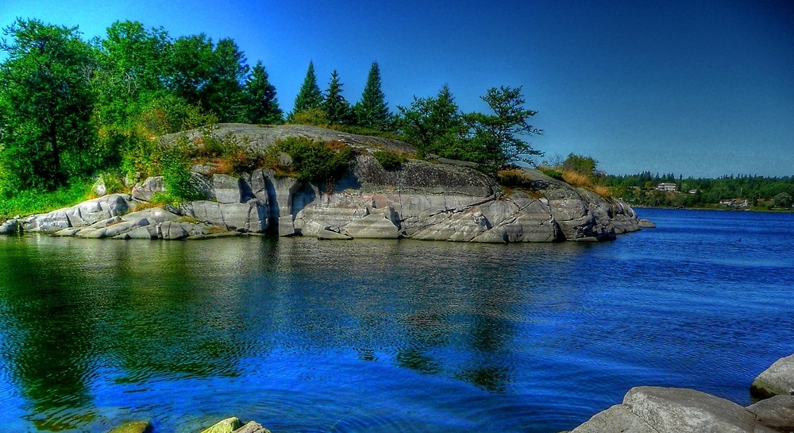

We sit on the Canadian Shield, and all the features of this landform region can be seen clearly on our map. We house dozens of lakes, ponds, and other practically unnamed bodies of water, forming our famously random drainage pattern. This is caused by weathering on the shield, partly due to the retreat of the glaciers. We can explain this with the concept of glaciers wavering in size, rubbing and weathering away at the rock of our beloved shield. This process, along with other forces weathering and erosion fighting relentlessly with the shield ever since its formation, which in fact took place during the precambrian era, approximately 4.6 billion years ago. These old scars have grown and made the water bodies that exist today in our park.

The big pond that we pride is Reed’s pond, one to tell a story about. Not that we know exactly how old it is, nor that we know what it’s story is, exactly, but we know that once upon a time, it a was a scar, on the shield, that it grew into the beauty it is today, and the glaciers melted, filling it up. We make this one of our landmarks because it is one of the many ponds in our park, and the beauty of these water bodies are not appreciated. As long as we protect these water bodies, we will be able to watch the formation of the more organized drainage system that is to come. We plan on observing, and recording the changes in the shield, so that it can be the shown to the people the power of erosion. It is one of the things that is yet to be discovered by the general population.
We also house a wide variety of different land materials. They range from loose dirt, gravel, and silt to solid granite and other minerals. The Canadian shield is after all Canada’s bag of minerals. The veins can be found deep underground, and they form due to hot molten rock, known as magma, rising into cracks in the crust. As they rise, the cool into the different minerals we use today, sometimes in our everyday life! We plan on making a center for delving into this subject and teaching our visitors how important this can be to us. We do have many mining companies in our shield, but the park wildlife will be protected, and we will refrain from giving it up to industry.